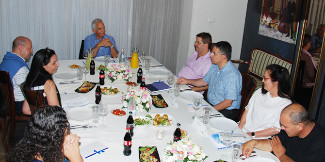
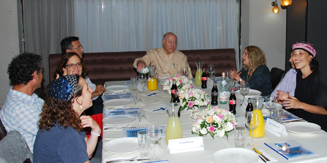

When the Mandel Foundation Steering Committee convened in Israel in mid-June, the Mandel Graduate Unit took the opportunity to arrange two parallel meetings for graduates of the Mandel School for Educational Leadership with the president and deputy chairman of the Mandel Foundation on June 15 2017.
The first session, led by Mandel Foundation president
Professor Jehuda Reinharz, was devoted to
Challenges of the Higher Education System. It explored questions facing the system that is charged with producing educated and trained personnel for the labor market – a system whose creativity, innovation, and excellence drives scientific, cultural, and professional innovation and excellence in Israeli society, and the training of future leaders for all areas of life in Israel. The session examined the perception of higher education as a “degree industry” or tool for professional development, the differences in mission between colleges and universities, and the unique role of each type of institution in providing training and professional development for education professionals.

Graduates meet with Professor Jehuda Reinharz to discuss higher education
Participants in the session on higher education included Moshe Vigdor, director general of the Mandel Foundation–Israel and former director general of Israel’s Council for Higher Education, and Dr. Granit Almog-Bareket, director of the Mandel Graduate Unit. They were joined by the following Mandel graduates: Shevi Govrin, head of the School for Diploma Studies at the Kibbutzim College of Education, Technology and the Arts, a graduate of Cohort 9 of the Mandel School for Educational Leadership; Professor Leah Laor, dean of the Faculty of Education at the Levinsky College of Education, a graduate of Cohort 2; Ariel Levy, senior deputy director of the Ministry of Education and director of its Pedagogical Secretariat, a graduate of Cohort 7; Eitan Moran, CEO of the Society for Advancement of Education, a graduate of Cohort 15; Professor Yonathan (Yoni) Mizrachi, head of the Department of Sociology and Anthropology at the Max Stern Yezreel Valley College, a graduate of Cohort 1; and Dr. Samira Alayan, a lecturer and researcher at the Hebrew University of Jerusalem and lecturer at the David Yellin College, a graduate of Cohort 10.
The second session focused on Jewish Peoplehood, and was led by Mr. Stephen Hoffman, deputy chairman of the Mandel Foundation, president of the Jewish Community Federation of Cleveland, and former CEO of the Jewish Federations of North America. Participants included Rakefet Mossek, consultations manager at the Mandel Graduates Unit, and the following Mandel graduates: Liat Barshishat, principal of the Karov Elementary School in Tzur Hadassah, a graduate of cohort 18; Dr. Michael Yedovitzky, director of activities in Germany and Central Europe of the Jewish Agency, a graduate of Cohort 7; Nir Lahav, director of the Social Activism Unit of the Jewish Agency, a graduate of Cohort 9; Dr. Yehuda Maimaran, CEO of the Alliance Israelite Universelle, a graduate of Cohort 3; Rachel Azaria, a Knesset Member for the Kulanu Party and a graduate of Cohort 18; Tehila Friedman-Nachalon, director of the KOLOT Center for Jewish Leadership, a graduate of Cohort 21; and Menachem (Mendi) Rabinovitz, principal of the Hebrew Reali School in Haifa and graduate of Cohort 10.

Graduates meet with Mr. Stephen Hoffman to discuss Jewish Peoplehood
The discussion of Jewish Peoplehood focused on the connection and sense of belonging between Jewish communities in Israel, the United States, and the rest of the world. It also explored the question of what binds these communities to each other today, and whether these bonds will be maintained in the future, given the growing levels of intermarriage, the fact that many Jews in the United States are not members of Jewish communities, and the fact that Israelis have little interest in Jewish communities abroad. Participants also discussed divisions that have been created due to the different conceptions of Judaism that exist in Israel and the diaspora, and spoke about their own role as leaders in presenting alternative faces of Judaism in Israel. Mr. Hoffman described the efforts of the Cleveland Jewish Federation to reconnect with Jews who have drifted away.
The meeting allowed the graduates to share their views, expertise, and professional experience, and to talk with one another about identity and belonging from both a personal and professional perspective. Many of them expressed the view that the key to change, to raising awareness, and to reconnecting Israel with the diaspora, lies in improving these communities’ familiarity with one another. For this reason, steps should be taken to create interpersonal encounters between the various groups.
{kind=link}
{kind=link}